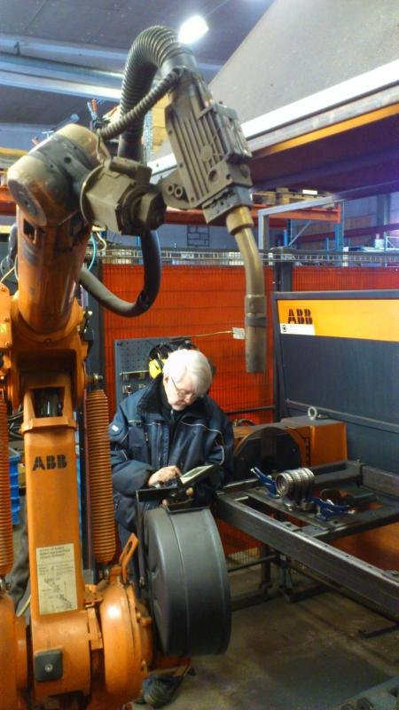

“Vitek’s deep knowledge in many areas and his interdisciplinary approach have been a big competitive advantage – adding value to customers and providing tangible savings for us.”
Doron KormanManaging Director, Dorkor Ltd
About & credentials
Find the root cause. Avoid unnecessary costs.
I’m Vit “Vitek” Sanek, a physicist by education and an independent technical consultant by profession. I combine scientific reasoning, practical experience and whole-system analysis to help clients make informed technical decisions.
I personally handle consultations and technical assessments; you deal directly with me rather than a sales team.


I hold an MSc in Physics, specializing in Physical Electronics and Optics, from Masaryk University in Brno, Czech Republic. My professional background includes more than 38 years in IT, decades of business management, and technical services delivered internationally.
I have provided remote IT troubleshooting since the 1990s and worked with industrial robotic systems and manufacturing automation. I also built two houses from their foundations in Europe, gaining firsthand experience with building construction and the integration of thermal insulation, air sealing, HVAC and electrical systems.
In several European countries, thermal insulation and building energy performance have been integral parts of building standards and construction practices for decades. This experience gave me practical knowledge of how insulation should be selected, installed and integrated with the rest of a building to achieve effective thermal performance and help avoid moisture-related problems. I apply this experience when evaluating existing buildings and identifying opportunities to improve insulation, comfort and energy efficiency.
Throughout my career, I have worked on problems where the apparent cause was not necessarily the real cause. I use scientific reasoning and a multidisciplinary perspective to examine how systems interact, test assumptions where possible, and evaluate practical alternatives.
My role is to diagnose, evaluate and advise—not to sell equipment, installations or replacements.
“Vitek’s deep knowledge in many areas and his interdisciplinary approach have been a big competitive advantage – adding value to customers and providing tangible savings for us.”
Doron KormanManaging Director, Dorkor Ltd
“Vitek integrated our robots into the computer network and streamlined our production processes increasing work efficiency up to 60%, resulting in savings of over $100,000 annually.”
Karl-Gustav WahlstrandEarlier industrial automation work
“The result was a very secure and reliable system including a second guest network to provide wireless access for visitors that was separate from our main network.”
Doug McIntyreEarlier IT and network work
These are excerpts from earlier professional recommendations, not reviews of the current California consulting business. See my LinkedIn profile.
An independent, utility-scale feasibility concept combining floating solar PV panels on existing retention basins with redox flow battery storage.
The concept projected 2.23 GWh in annual electricity generation, averaging 6.11 MWh per day, and included 4 MWh of redox flow battery storage. It considered centralized use of existing water retention basins rather than dispersed rooftop and parking-lot solar PV systems.
Centralization could reduce infrastructure duplication; a modular pilot would be needed to validate performance. A potential combined 7–11% energy-yield improvement from water cooling and bifacial modules was estimated for particular design assumptions, not verified in operation.
I independently presented the unsolicited concept to a utility engineer during a Citizens Water Academy event, without a commission. I received no subsequent response or feedback from the utility.
Early-stage evaluation of potential micro-hydropower recovery from wastewater conveyance infrastructure.
The evaluation was conceptual and based on limited publicly available inputs; it was not an implemented project. It illustrates applying basic physics and system-level analysis to explore overlooked energy opportunities.
I provide independent consulting, technical diagnostics, analysis, configuration and visual observations of accessible building-system conditions. I do not hold a California electrician, electrical contractor or professional engineer license, and I do not undertake work reserved for those licensees.
My electrician qualification was issued in the Czech Republic under national regulations incorporating relevant European Union requirements. It covered independent electrical work without voltage restrictions, including work on high-voltage equipment, lightning and surge protection systems, and electrical equipment in explosion-hazard areas. It also covered the management of electrical work up to 1 kV AC and 1.5 kV DC.
The certification expired in September 2026. I am currently preparing to take the examination required for renewal.
My consulting and visual observations are not a substitute for specialized inspections, mold remediation, licensed repair or installation, engineering design, or other services where a specific qualification is required. If an issue needs a specialist, I will explain that.
You do not need to know the technical terminology or decide in advance what service you need.
Tell me what is happening, what you have already tried, or share the recommendation or proposal you want reviewed.
I reply whether the issue is within my consulting scope, what further information may be needed, and what an assessment or project could cost.
If you wish to continue, we agree on the scope and cost before any paid work begins. I then provide the agreed assessment, findings, and practical recommendations.